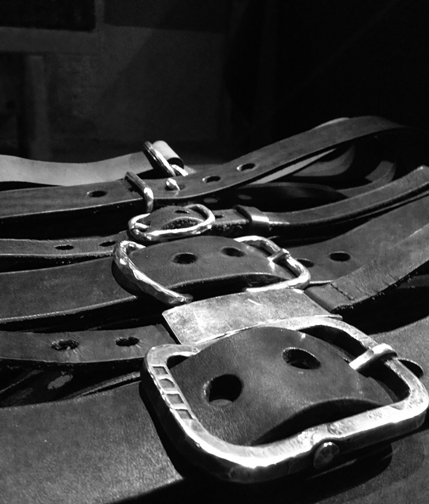
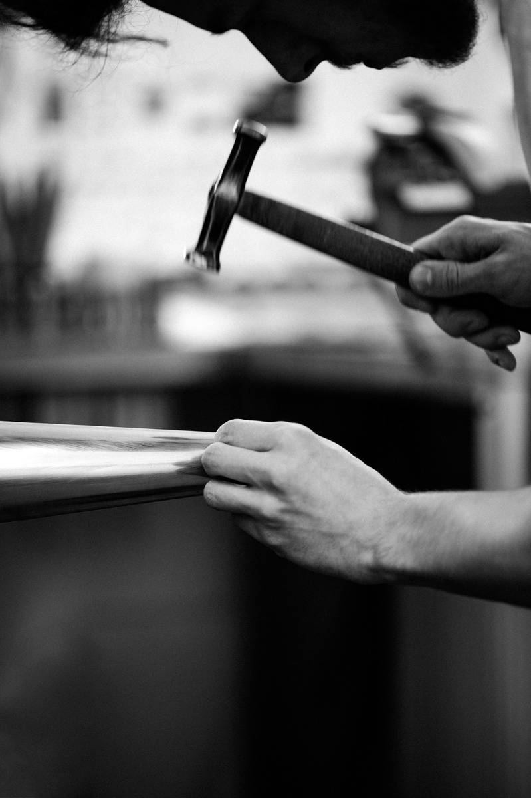

MATERIALS
 SILVER Silver is the most beautiful white metal, it has the warmest tone and has a unique mouldability, giving us an endless number of possibilities to create. Contrast is achieved by oxidising to get the effect of old pieces where the silver has been polished in the process of wearing. We believe in a natural transformation through wearing – a natural ageing. The surface will gain scratches and natural traces and thus become even more individual. Simultaneously the blackness can slightly brighten caused by movement and constant touching.
Silver as well has an antibacterial quality and a high thermal conductivity that makes it especially appropriate for the use as silverware, e.g. goblets. Following our conviction we keep the silver surface pure without any kind of galvanisation or chemical covering to guarantee that the natural process of ageing will develop. To ensure the wearing comfort all our rings are polished to be smooth on the inside, no matter how rough the outside may look and feel.
Throughout all periods of history silver was considered to be a very precious material and stayed desirable over centuries. In best case our pieces will still be celebrated, when found years later.
GOLD Even though it is relatively heavy, we decided to only use 900/000 gold for all our pieces due to its rich and beautiful gold hue. Gold has a very high density, therefore the same piece manufactured in gold has almost double weight compared to silver. The chains are 750/000 gold for stability reasons – 900/000 gold would be too soft.
LEATHER Our leathers are custom made in a traditional vegetable tanning process according to our needs in a 500 years old tannery. In this slow working process the fibres have time to transform the old-school way. All skins are highest-quality belt leathers from Bavarian bulls. For our bag leathers we split belt leathers down to thinner layers of which we use only the valuable top part to keep the elementary skin structure.
Due to the organic tanning process a natural ageing process will follow. Everything gains a soul through its particular history, no matter if it is concrete, steel, a wooden floor, furniture or a building. We sew by hand traditionally using two needles and threads. With this hand stitching technique we want to guarantee the most reliable outcome so your leather ware will go with you for a very long time.
CASHMERE Only pure cashmere is used for our caps, spun by an Italian manufacturer. All woollen pieces are hand-knit in Munich.